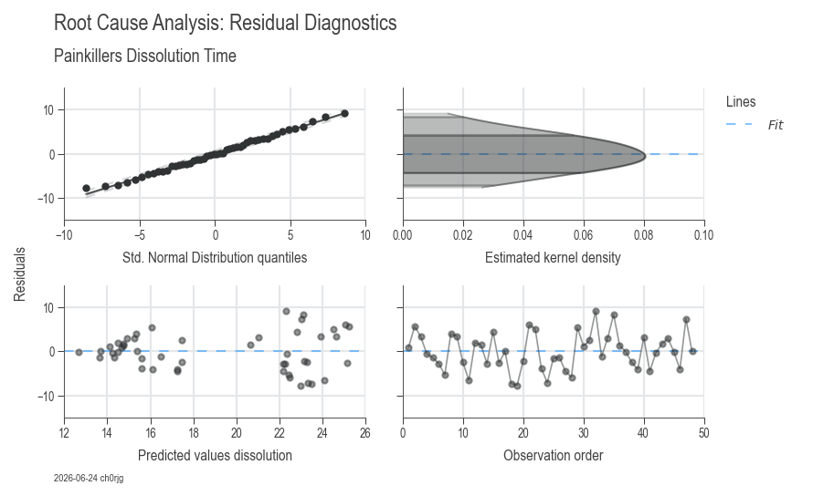
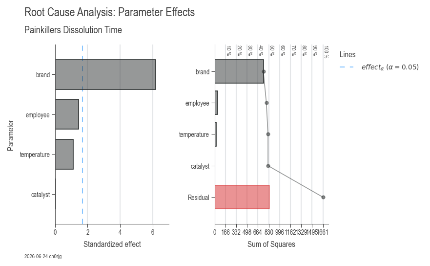

Workflow 2: Root Cause Analysis¶
Root cause analysis identifies which factors (inputs) significantly impact your process output. This is the core of Six Sigma's "Analyze" phase and essential for data-driven decision making.
When to Use This Workflow¶
- ✅ Problem investigation: Determine what's causing quality issues
- ✅ Process optimization: Find key drivers to focus improvement efforts
- ✅ DMAIC Analyze phase: Statistical confirmation of root causes
- ✅ DOE analysis: Evaluate experimental results and factor effects
Quick Start (15 Lines)¶
import daspi as dsp
# Load data with multiple factors
df = dsp.load_dataset("painkillers-dissolution")
# Fit model with automatic factor selection
model = dsp.LinearModel(
source=df,
target="dissolution",
factors=["employee", "brand", "catalyst"],
covariates=["temperature"]
)
# Remove non-significant factors automatically
model.recursive_elimination()
# Visualize results
dsp.ResidualsCharts(model).plot().stripes().label(info=True)
dsp.ParameterRelevanceCharts(model).plot().stripes().label(info=True)

Residual diagnostics: 4-panel analysis validating model assumptions
Parameter effects: ANOVA table, effect sizes, and statistical significanceWhat You Get¶
ResidualsCharts (Model Validation)¶
Ensures your model assumptions are valid:
- Residuals vs Fitted: Check for patterns (should be random scatter)
- Q-Q Plot: Verify normality of residuals
- Scale-Location: Check homoscedasticity (constant variance)
- Residuals vs Leverage: Identify influential outliers
ParameterRelevanceCharts (Factor Analysis)¶
Shows which factors matter:
- Parameter estimates with confidence intervals
- Effect sizes and statistical significance
- ANOVA table (F-statistics and p-values)
- R² values (model fit quality)
Automatic interpretation includes: - Significant vs non-significant factors - Effect magnitude and direction - Model quality metrics (R², adjusted R², predicted R²) - Residual analysis diagnostics
Understanding the Output¶
ANOVA Table¶
The ANOVA table shows which factors significantly affect your output:
| Source | DF | SS | MS | F | p-value | η² |
|---|---|---|---|---|---|---|
| Factor A | 2 | 1360.7 | 680.4 | 10.2 | 0.001 | 0.58 |
| Factor B | 1 | 234.5 | 234.5 | 3.5 | 0.082 | 0.12 |
| Residual | 15 | 1001.8 | 66.8 | - | - | 0.42 |
Interpretation: - p-value < 0.05: Factor is statistically significant (reject H₀) - η² (eta-squared): Proportion of variance explained (effect size) - F-statistic: Ratio of explained to unexplained variance
Goodness-of-Fit Metrics¶
- R²: Proportion of variance explained (0-1, higher is better)
- Adjusted R²: R² penalized for model complexity
- Predicted R²: Cross-validation estimate (avoid overfitting)
- Target: R² > 0.7 for good fit, adjusted R² ≈ predicted R²
Real-World Example: Quality Investigation¶
import daspi as dsp
# Load manufacturing data
df = dsp.load_dataset("painkillers-dissolution")
# Investigate dissolution time issues
model = dsp.LinearModel(
source=df,
target="dissolution",
factors=[
"employee", # Categorical: who made it
"stirrer", # Categorical: equipment type
"brand", # Categorical: material supplier
"catalyst", # Categorical: process variant
"water" # Categorical: water type
],
covariates=[
"temperature", # Continuous: process temperature
"preparation" # Continuous: prep time
],
order=2, # Include interaction effects
alpha=0.05
)
# Backward elimination removes non-significant factors
df_elimination = model.recursive_elimination()
print(df_elimination)
# Visualize final model
residuals = dsp.ResidualsCharts(model
).plot(
).stripes(
).label(
fig_title="Dissolution Time Root Cause Analysis",
sub_title="Residual Diagnostics",
info=True
)
parameters = dsp.ParameterRelevanceCharts(model
).plot(
).stripes(
).label(
fig_title="Dissolution Time Root Cause Analysis",
sub_title="Parameter Effects",
info=True
)
# Get ANOVA table
print(model.anova())
# Get parameter estimates
print(model.params())
Advanced Analysis¶
Interaction Effects¶
Interactions occur when the effect of one factor depends on the level of another:
# Include 2-way interactions
model = dsp.LinearModel(
source=df,
target="yield",
factors=["temperature", "pressure"],
order=2 # Includes Temperature × Pressure
)
Interpretation: - Significant interaction: Optimize factors together - Non-significant interaction: Optimize factors independently
Categorical vs Continuous Factors¶
model = dsp.LinearModel(
source=df,
target="output",
factors=["machine", "operator"], # Categorical
covariates=["speed", "feed"] # Continuous
)
Difference: - Factors: Discrete levels (compare groups) - Covariates: Continuous (regression relationship)
Model Comparison¶
import pandas as pd
# Fit multiple models
model1 = dsp.LinearModel(source=df, target="y", factors=["A", "B"])
model2 = dsp.LinearModel(source=df, target="y", factors=["A", "B", "C"])
model3 = dsp.LinearModel(source=df, target="y", factors=["A", "B", "C"], order=2)
# Compare quality metrics
comparison = pd.DataFrame({
'Model': ['A+B', 'A+B+C', 'A+B+C+interactions'],
'R²': [model1.r2, model2.r2, model3.r2],
'Adj R²': [model1.r2_adj, model2.r2_adj, model3.r2_adj],
'Pred R²': [model1.r2_pred, model2.r2_pred, model3.r2_pred]
})
print(comparison)
Interpretation Guidelines¶
Residual Analysis¶
✅ Good model: - Residuals randomly scattered (no patterns) - Q-Q plot follows diagonal line (normal) - No influential outliers (Cook's distance < 1)
❌ Problem indicators: - Curved pattern → missing interaction or non-linear term - Funnel shape → heteroscedasticity (transformation needed) - Points far from Q-Q line → outliers or non-normality
Statistical Significance¶
p-value < 0.05: Factor is significant - Effect is real (not due to chance) - Include in final model
p-value ≥ 0.05: Factor is not significant - Effect indistinguishable from noise - Consider removing (simplify model)
Effect Size (η²)¶
- η² > 0.14: Large effect (factor has major impact)
- 0.06 < η² < 0.14: Medium effect
- η² < 0.06: Small effect (may not be practically important)
Common Issues & Solutions¶
Issue: Non-normal residuals¶
Causes: Outliers, wrong model structure, non-normal data
Solutions:
1. Check for outliers and investigate
2. Try transformation (log, sqrt, Box-Cox)
3. Add missing interaction terms
Issue: Low R² despite significant factors¶
Causes: High inherent variation, missing factors
Solutions:
1. Check measurement system capability (Gage R&R)
2. Identify additional factors (process mapping, brainstorming)
3. Improve process control to reduce noise
Issue: Adjusted R² << Predicted R²¶
Cause: Overfitting (model too complex)
Solution: Use backward elimination, reduce model complexity
Issue: Multicollinearity warning¶
Cause: Highly correlated predictors
Solution: Remove redundant factors, use VIF analysis
Step-by-Step Workflow¶
1. Data Preparation¶
2. Fit Initial Model¶
# Include all suspected factors
model = dsp.LinearModel(
source=df,
target="output",
factors=["factorA", "factorB", "factorC"],
covariates=["covariate1"],
order=1 # Start without interactions
)
3. Check Model Fit¶
# Visualize residuals
dsp.ResidualsCharts(model).plot().stripes().label(info=True)
# Check metrics
print(f"R² = {model.r2:.3f}")
print(f"Adj R² = {model.r2_adj:.3f}")
print(f"Pred R² = {model.r2_pred:.3f}")
4. Simplify Model¶
# Remove non-significant factors
model.recursive_elimination(alpha=0.05)
# Review final model
print(model.anova())
5. Interpret Results¶
# Visualize parameter effects
dsp.ParameterRelevanceCharts(model).plot().stripes().label(info=True)
# Get estimates with confidence intervals
params = model.params()
print(params[['estimate', 'ci_low', 'ci_upp', 'p']])
6. Validate & Implement¶
- Verify findings with confirmation runs
- Implement process changes based on key factors
- Monitor with SPC (Workflow 3)
Next Steps¶
- Workflow 1: Capability Analysis — Verify improvements
- Workflow 3: SPC Charts — Monitor sustained improvement
- Related: DOE Guide — Design experiments to test factor effects
- Related: Hypothesis Testing — Statistical testing fundamentals